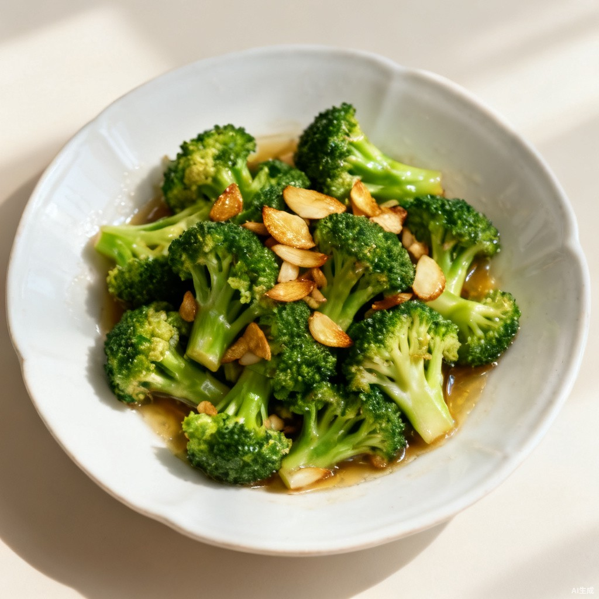

视觉原型 · 方向① 大图版 B 网格风 · a 首页
‹ 返回索引
今天 · 10月13日 周二
2 大 1 小 · 晚餐是今天的下一餐
今天三餐
做完一餐点「记一笔」
晚餐
约 18:00 开饭
下一餐
清蒸鲈鱼
蒸 12 分钟 · 刺少适合孩子
番茄炒蛋
炒 15 分钟 · 孩子爱吃

蒜蓉西兰花
炒 8 分钟 · 配米饭
看做法
记一笔
早餐
7:20 吃过
做了 · 好吃
葱花鸡蛋饼
烙 10 分钟
小米南瓜粥
预约煮 40 分钟
已评价 · 下次还做
中餐
12:10 吃过
做了 · 一般
土豆炖牛腩
炖 50 分钟
清炒油麦菜
炒 6 分钟 · 配米饭
已评价 · 点击查看
定明天的餐
10月14日 周三 · 必消已用上
早餐
红豆薏米粥 · 胡萝卜鸡蛋饼 · 拌豆腐丝
中餐
土豆炖牛腩 · 蒜蓉油麦菜 · 米饭
晚餐
可乐鸡翅 · 上汤娃娃菜 · 番茄蛋花汤
查看菜单
看采购清单
示意图·正式版为试做实拍
首页
历史
设置